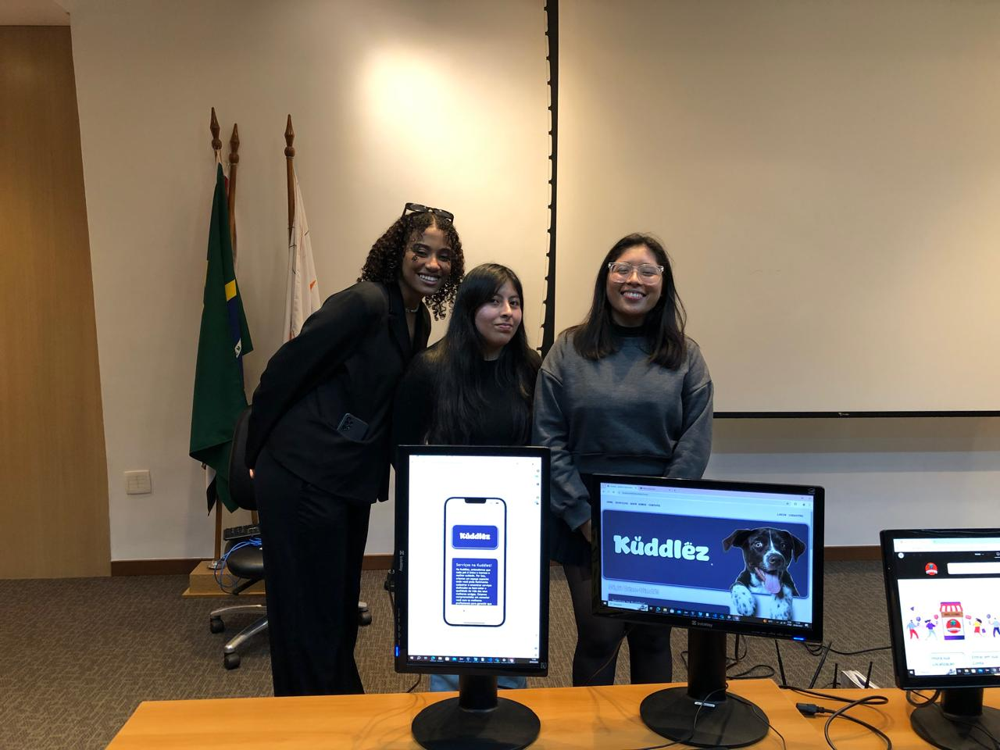
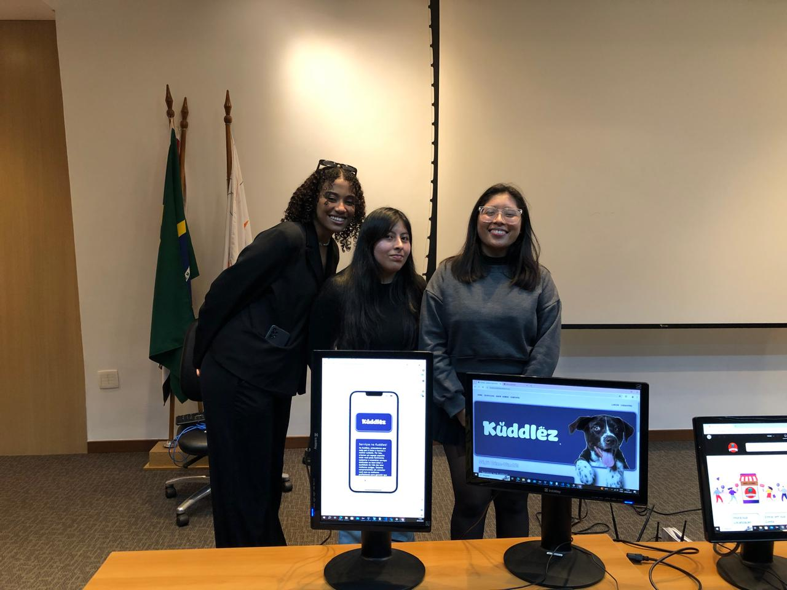

Quem sou eu?
Se tem algo que sempre me acompanhou, é a curiosidade. Foi ela que me fez
olhar pro mundo querendo entender não só como as coisas funcionam,
mas também por que. E é exatamente essa inquietação que me levou
até a tecnologia — uma ferramenta poderosa pra quem gosta de transformar
perguntas em soluções.
Hoje, trilho meu caminho unindo essa curiosidade ao otimismo.

 
